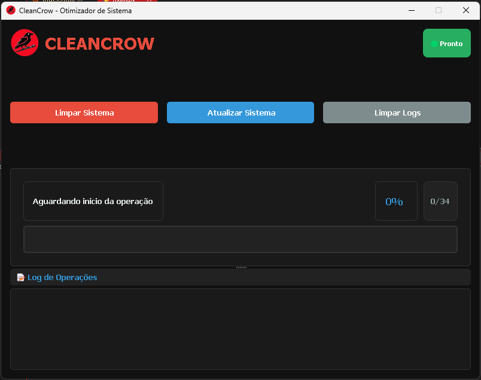

Advanced System Optimizer
Everything you need to keep your Windows running at peak performance
Remove temporary files, caches, and unnecessary registry entries that accumulate and slow down your system.
Advanced system tweaks to improve your computer's responsiveness and efficiency.
Keep all your programs updated with the latest versions via Windows Package Manager (winget).
Your system's safety is our top priority
CleanCrow uses only native Windows tools and commands, ensuring maximum compatibility and security.
No third-party libraries or components required, keeping your system clean and secure.
All operations require user confirmation. Nothing runs without your explicit permission.
Recommends creating system restore points before critical operations for maximum safety.
Simple, intuitive, and powerful
Just click the "Clean" button to start all cleaning and optimization operations. A progress bar shows the status of each step.
EasyUse the "Update" button to run the winget upgrade --all command and keep all your programs automatically updated.
FastFor advanced operations, run as administrator. CleanCrow will prompt when needed.
PowerfulClear error messages explain issues and how to resolve them, keeping you in control.
TransparentCheck out the modern, intuitive, and easy-to-use CleanCrow interface below.

CleanCrow saved my old laptop! It's now running faster than ever. The automatic update feature is a game-changer.
Finally a cleaning tool that actually works and doesn't try to sell you anything. Simple, effective, and open source!
The winget integration alone makes this worth it. Updating all my apps with one click is amazing.
Download CleanCrow now and restore your computer's speed and efficiency. Completely free and secure.